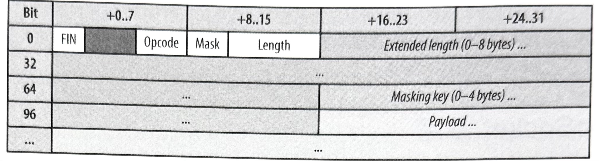

1-18-16 WebSocket
WebSocket 讓客戶端和伺服器之間能夠進行二進位資料的雙向，且訊息導向（message-oriented）的串流傳輸方式。它是非常接近瀏覽器裡的原始網路套接通訊（network socket）的 API。WebSocket 連線不僅僅是一種網路套接通訊方式外，瀏覽器還把所有的複雜度都抽離到一套簡單 API 的背後，並提供了許多的額外服務：
- 連線協商作業和同源政策的強制執行作業。
- 具備與 HTTP 基礎建設的互用性。
- 訊息導向的溝通和有效的訊息框架。
- 附屬協定協商機制和可擴充性。
WebSocket 是瀏覽器裡頭，最通用也最靈活的傳輸方式之一。這個既簡單又輕巧的 API 讓我們能夠在客戶端和伺服器之間，以某種串流形式來配置和傳輸任意的應用程式協定，因此從簡單的 JSON 負載內容，到自訂二進位訊息格式的任何東西，都可以隨時從任何一邊去傳輸資料。
然而，搭配自訂協定的權衡之處是，它們要是有經過適當客製化過的。應用程式必須考慮到遺失狀態的管理工作、壓縮、快取，和瀏覽器所提供的其他服務。在任何協定的實作上，通常都會有其設計限制和效能權衡之處，因此 WebSocket 的使用情況也不例外。簡單來說，WebSocket 並不是 HTTP、XHR 或 SSE 的替代品，而且針對最佳效能的考量來說，能夠善用每一種傳輸方式的優勢才是最關鍵的部分。
WebSocket 是一套多種標準的集合：WebSocket API 是由 W3C 所定義，而 WebSocket 協定（RFC 6455）和它的擴充功能部分則都由 HyBi 工作小組（IETF）來進行定義的。
WebSocket API
由瀏覽器提供的 WebSocket API 非常小巧又簡單。同樣地，連線管理和訊息處理作業的所有低階細節部分，全都由瀏覽器來負責搞定。若要啟動一個新的連線，我們需要用到 WebSocket 資源的 URL 和幾個應用程式回呼程序（callbacks）：
var ws = new WebSocket('wss://example.com/socket'); // 1
ws.onerror = function(error) { ... }; // 2
ws.onclose = function() { ... }; // 3
ws.onopen = function() { // 4
ws.send("Connection established. Hello server!"); // 5
};
ws.onmessage = function(msg) { // 6
if (msg.data instanceof Blob) { // 7
processBlob(msg.data);
} else {
processText(msg.data);
}
};
- 開啟一個新的安全 WebSocket 連線（wss）。
- 選擇性回呼函數，當發生連線錯誤時，會被引發。
- 選擇性回呼函數，當連線被中止時，會被引發。
- 選擇性回呼函數，當 WebSocket 連線被建立起來時，會被引發。
- 客戶端對伺服器發送訊息。
- 會被來自伺服器的每個新訊息所引發的一個回呼函數。
- 針對已收到訊息而引發的二進位或文字資料處理作業。
API 的實際使用情況就如同上述範例那樣。事實上，它看起來應該會和我們在上一章裡頭所看到的 EventSource 非常類似。這完全是刻意設計好的，因為 WebSocket 會提供類似，且擴充過的功能性。儘管如此，這當中當然還是有不少重要的差異。讓我們一個個來檢視一下。
模擬 WebSocket
WebSocket 協定已經歷經多次的改版，實作回退（implementation fallback），以及安全性審查作業。然而，好消息是，由 RFC 6455 所定義的最新版本（v13）現在在所有最新瀏覽器當中，都有提供支援。唯一的漏網之魚就是 Android 瀏覽器。更多最新狀態，請參考 http://caniuse.com/websockets 網站內容。
就類似 SSE 的補充策略（polyfill strategy）那樣（請參考《搭配自訂 JavaScript 來模仿 EventSource》），WebSocket 瀏覽器的 API 可以透過選擇一個選擇性 JavaScript 程式庫，來進行模擬。然而，模擬 WebSockets 的困難之處，並不是在 API，而是在傳輸作業上！因此，補充程式庫和它的可靠傳輸方式（XHR 輪詢、EventSource、iframe 輪詢等等）的選用情況，將會對一個模擬 WebSocket 議程（session）的效能有顯著的影響。
為了簡化跨瀏覽器的部署情況，像 SockJS 之類的熱門程式庫會在瀏覽器中，提供一個類似 WebSocket 物件的實作方式，但是卻能更進一步地，提供一個有實作 WebSocket 和多種替代性傳輸方式的支援能力的自訂伺服器。自訂伺服器和客戶端的組合方式，造成了「無縫回退」（seamless fallback）的情況：也就是效能受損，但應用程式 API 卻仍然維持不變的情形。
像 Socket.IO 之類的其他程式庫，甚至會實作心跳機制（heartbeats）、逾時（timeouts）、支援自動重新連線，以及除了多種傳輸回退功能之外的其他額外功能。
在考慮某種補充程式庫，或 Socket.IO 之類的「即時程式框架」的時候，請密切注意客戶端和伺服器的底層實作和配置方式：通常都會為了最佳效能而運用到原生的 WebSocket 介面，並且要確定一下，回退傳輸情況確實符合你的效能目標。
WS 和 WSS 的 URL 規範模式
WebSocket 的資源 URL 會使用自訂的規範模式（schema）：針對純文字通訊處理的
ws
（例如，
ws://example.com/socket
），以及需要加密通道 （TCP+TLS）時所用的
wss
。為何要採用自訂規範模式來取代熟悉的
http
呢？
WebSocket 協定的主要使用狀況，是要在瀏覽器裡頭所運行的應用程式和伺服器之間，提供一種最佳化的雙向通訊頻道。然而，WebSocket 有線協定可以被運用在瀏覽器以外的地方，並且可以透過非 HTTP 交換方式，來進行協商處理。因此，HyBi 工作小組就選擇採用自訂的 URL 規範模式。
儘管非 HTTP 協商選項是由自訂規範模式所啟用的，但實際上，在建立 WebSocket 議程的替代性交握機制方面，目前卻沒有任何的現成標準可用。
文字和二進位資料的接收方式
WebSocket
通訊方式是由訊息和應用程式代碼所組成，而且不需要去擔心緩衝、解析，和重新建構已接收資料的處理作業。舉例來看，假如伺服器發送一個
1 MB 的負載內容的話，應用程式的
onmessage
回呼函數就會在客戶端接收到整個訊息之後，被呼叫起來。
此外，WebSocket 協定並不會在應用程式負載內容上，進行任何的假設或限制：對於文字和二進位資料都一視同仁。從內部來看，協定就只會追蹤訊息的兩個部分：有關負載內容長度的一個可變長度欄位，以及用來與二進位傳輸有所區別的 UTF-8 的負載內容類型。
當瀏覽器接收到一個新的訊息時，它會自動將純文字資料轉換成一個
DOMString
物件，或者是將二進位資料轉換成
Blob
，然後再直接傳給應用程式。可用來對客戶端提供效能提示和最佳化處理方式的唯一其他選項，就是告訴瀏覽器把接收到的二進位資料轉換成
ArrayBuffer
，而不是
Blob
物件：
var ws = new WebSocket('wss://example.com/socket');
ws.binaryType = "arraybuffer"; // 1
ws.onmessage = function(msg) {
if (msg.data instanceof ArrayBuffer) {
processArrayBuffer(msg.data);
} else {
processText(msg.data);
}
};
-
當接收到二進位訊息時，強制進行
ArrayBuffer轉換處理。
使用者代理程式可以使用底下這個方式，來當作如何處理傳入的二進位資料的一種提示：假如屬性（attribute）被設定為「
blob」的話，就表示它是可以放心地被保存到硬碟裡頭，而如果它是被設定為「arraybuffer」的話，就表示把資料保留在記憶體當中，可能會更有效率。顯然，使用者代理程式被鼓勵使用更敏銳的試探方式來決定是否要把傳入的資料，保存在記憶體當中。—WebSocket API W3C 候選建議
Blob
物件代表的是一個不可變原始資料（immutable raw data）的檔案型物件（file-like
object）。假如你不需要對資料進行修改，而且不需要將它分割成更小的片段的話，那麼它就是最理想的格式。例如，你可以將整個
Blob
物件傳遞給一個圖像標籤（請參考《搭配 XHR
進行資料下載處理》）。換句話說，假如你需要在二進位資料上執行額外處理作業的話，那麼
ArrayBuffer
很可能是最佳選擇。
搭配 JavaScript 來進行二進位資料的解碼處理
ArrayBuffer
是一種通用的，且固定長度的二進位資料緩衝空間（buffer）。然而，一個
ArrayBuffer
可以被用來建立出一個或多個
ArrayBufferView
物件，而其中的每一個都可以用某種特定格式來代表緩衝區的內容。舉例來說，假設我們擁有以下類似
C 語言的二進位資料結構：
struct someStruct {
char username[16];
unsigned short id;
float scores[32];
};
已知有這種類型的
ArrayBuffer
物件，我們就可以把多種檢視方式（view）建立到相同的緩衝區當中，而其中的每一種都含有它自己的偏移量（offset）和資料型別（data
type）：
var buffer = msg.data;
var usernameView = new Uint8Array(buffer, 0, 16);
var idView = new Uint16Array(buffer, 16, 1);
var scoresView = new Float32Array(buffer, 18, 32);
console.log("ID: " + idView[0] + " username: " + usernameView[0]);
for (var j = 0; j < 32; j++) {
console.log(scoresView[j]);
}
每種檢視方式（view）都會取得主要緩衝區（parent
buffer）、起始位元組偏移量（offset），和要處理的位元組數量。偏移量是根據上述欄位的大小為基礎所計算出來的。因此，
ArrayBuffer
和
WebSocket
為我們的應用程式，賦予了在瀏覽器裡頭進行串流與處理二進位資料的所有必要工具。
文字和二進位資料的發送方式
當 WebSocket 連線被建立起來的時候，客戶端就可以根據需要來發送或接收 UTF-8 和二進位訊息。WebSocket 提供了一個雙向溝通管道，而讓訊息可以透過同一個 TCP 連線來進行雙向傳輸處理。
var ws = new WebSocket('wss://example.com/socket');
ws.onopen = function() {
ws.send("Hello server!"); // 1
ws.send(JSON.stringify({'msg': 'payload' })); // 2
var buffer = new ArrayBuffer(128);
ws.send(buffer); // 3
var intview = new Uint32Array(buffer);
ws.send(intview); // 4
var blob = new Blob([buffer]);
ws.send(blob); // 5
};
- 發送一個 UTF-8 編碼的文字訊息。
- 發送一個 UTF-8 編碼的 JSON 負載內容。
-
發送
ArrayBuffer內容來作為二進位負載內容。 -
發送
ArrayBufferView內容來作為二進位負載內容。 -
發送
Blob內容來作為二進位負載內容。
WebSocket API 會收到一個直接被編碼成 UTF-8 的
DOMString
物件，或者是一個以二進位傳輸的
ArrayBuffer
、
ArrayBufferView
、或
Blob
物件的其中一種。然而，請注意到，後面的二進位選項都是簡單的一種 API
方便處理方式而已：WebSocket
時框會直接以一個位元來標記為二進位或文字類型。因此，假如應用程式或伺服器需要有關負載內容的其他內容類型資訊的話，它們就必須使用某種額外機制來溝通這項資料。
send()
方法是屬於非同步（asynchronous）的方法：已提供的資料會被客戶端進行佇列處理，然後函數就會立即返回。因此，尤其是在傳輸龐大的負載內容時，請不要把快速返回誤解成資料已經被傳送出去的訊號！若要監督由瀏覽器所佇列的資料量的話，應用程式可以查詢在套接介面（socket）上的
bufferedAmount
屬性：
var ws = new WebSocket('wss://example.com/socket');
ws.onopen = function() {
subscribeToApplicationUpdates(function(evt) { // 1
if (ws.bufferedAmount == 0) { // 2
ws.send(evt.data); // 3
}
});
};
- 訂閱應用程式更新情況（例如，遊戲狀態變化）。
- 檢查客戶端上的緩衝資料量。
- 假如緩衝區已經空了的話，就發送下一個更新訊息。
上述範例試圖要發送應用程式的更新資訊給伺服器，但就只有在先前訊息已經從客戶端的緩衝區裡頭都已經被耗盡的情況下才會進行相關處理。為什麼進行這麼麻煩的檢查呢？所有的 WebSocket 訊息都會以它們被客戶端進行停列處理的明確次序來進行傳輸。因此，已停列訊息的累積結果，或是一個單一龐大訊息將會拖延到被佇列在它後面的訊息的傳輸情況—這就是線頭阻塞（head-of-line blocking）！
若要解決這個問題，應用程式可以把龐大訊息拆解成較小的分段區塊（chunks），並仔細監督
bufferedAmount
的值，以避免發生線頭阻塞現象，甚至針對待處理訊息實作它本身的優先權佇列，而不是讓它們全都盲目地佇列在套接介面上等候傳輸。
許多應用程式都會產生多種訊息的類別：例如，針對控制流量部分採用高優先權更新等級，而背景傳輸部分則賦予低優先權更新等級。若要對傳輸部分進行最佳化，應用程式應該要密切關注在套接介面上的每種訊息類型，被進行佇列的處理方式和時機。
附屬協定協商作業（Subprotocol Negotiation）
WebSocket 協定不會對每個訊息的格式做任何的假設：一個單一位元會被用來追蹤訊息是存放著文字或二進位資料，這樣它就可以有效地被客戶端或伺服器進行解碼處理，否則訊息內容的部分是屬於不透明的。
此外，與會透過每個請求和回應的 HTTP 標頭來溝通額外後設資料（metadata）的 HTTP 或 XHR 請求所不同的是，WebSocket 訊息並沒有這種同等機制。因此，假如有需要用到訊息的額外後設資料的話，客戶端和伺服器就必須同意去實作它們自己的「附屬協定」（subprotocol），以便溝通這項資料：
- 客戶端和伺服器可以事先同意某種固定的訊息格式——例如，所有溝通作業都會透過 JSON 編碼訊息，或是某種自訂二進位格式來完成，而必要的訊息後設資料將屬於編碼結構的一部分。
- 假如客戶端和伺服器需要傳輸不同的資料類型的話，那麼它們可以同意某種一致的訊息標頭，以便用來溝通能對負載內容的剩餘部分進行解碼處理的指令。
- 文字和二進位訊息的混合方式可以被用來進行負載內容和後設資料的通訊作業——例如，一段文字訊息可以溝通一個等同於 HTTP 表頭的資訊，而隨後則是含有應用程式負載內容的一個二進位訊息。
這份列表只是一種可能策略的範例。一個 WebSocket 訊息的彈性和低成本情況，是屬於應用程式邏輯以外的價值。然而，訊息序列化（serialization）和後設資料的管理工作，都只是問題的一部分。當我們決定好訊息的序列化格式之後，我們要如何確保客戶端和伺服器都能互相瞭解？而我們又要如何讓它們保持同步呢？
值得慶幸的是，WebSocket 提供了一種簡單又方便的附屬協定協商（subprotocol negotiation）API，來解決第二個問題。客戶端可以發出它所支援的協定資訊給伺服器，來當作它最初連線交握程序的一部分：
var ws = new WebSocket('wss://example.com/socket', ['appProtocol', 'appProtocol-v2']);
ws.onopen = function () {
if (ws.protocol == 'appProtocol-v2') {
// 使用 appProtocol-v2 進行通訊
} else {
// 使用其他協定進行處理
}
};
- 在 WebSocket 交握過程當中，發出附屬協定的陣列。
- 檢查伺服器所選用的附屬協定。
正如上述範例所闡述的那樣，WebSocket 結構接受一個選擇性附屬協定名稱的陣列，以允許客戶端公布有關它本身所能解讀，或是願意在連線上使用的協定列表。指定的列表會被發送至伺服器，而伺服器則被允許從客戶端所公布的協定裡頭，挑選其中之一來使用。
假如附屬協定協商作業成功的話，
onopen
回呼函數就會在客戶端上被引發，而應用程式就可以查詢
WebSocket
物件上的
protocol
屬性，以判斷出被選用的協定。另一方面，要是伺服器不支援客戶端所公布的任何一項客戶端協定的話，那麼
WebSocket 交握作業就屬於未完成狀態：
onerror
回呼函數就會被喚起，而且連線就會被中止。
附屬協定名稱是由應用程式所定義的，而且會在初始 HTTP 交握作業期間，被發送給指定的伺服器。此外，指定的附屬協定對核心 WebSocket API 並不會有任何影響。
WebSocket 協定
由 HyBi 工作小組所發展出來的 WebSocket 連線協定（RFC 6455），是由兩個高階組件所組成：包括開啟 HTTP 交握作業來進行連線參數的協商作業的部分，以及允許針對文字和二進位資料進行低成本的訊息傳輸作業的一種二進位訊息分框機制的部分。
WebSocket 協定試圖在現有 HTTP 基礎建設環境之下，解決現有雙向 HTTP 技術的目標；因此，它被設計透過 HTTP 的 80 和 443 通訊埠來運作。然而，這樣的設計並不會因此將 WebSocket 限制在 HTTP 上，並且在未來的實作上，將可以在不需要重新發明整個協定的情況下，透過一個專屬通訊埠來使用一個較簡單的交握程序。—WebSocket 協定 RFC 6455
WebSocket 協定是可在瀏覽器以外的地方使用的一種全功能獨立協定。也就是說，它的主要應用方式，就是用來當作瀏覽器型應用程式（browser-based application）的一種雙向傳輸方式。
二進位分框處理層（Binary Framing Layer）
客戶端和伺服器的 WebSocket 應用程式，會透過訊息導向 API 來進行通訊：發送者會提供一個任意的 UTF-8 或二進位負載內容，而接收者會在整個訊息處於可用狀態時，被通知它的傳輸情況。為了進行這項處理，WebSocket 會使用一個自訂二進位分框處理格式（binary framing format）（如圖-1），以便用來將每個應用程式訊息分割成一個或多個時框（frames），並將它們輸送到目的地後，再進行重新組合，直到整個訊息都已經被接收完整的時候，對接收者發出通知訊號。
圖-1 ： WebSocket 時框：2~14 個位元組＋負載內容
-
時框（Frame）
通訊的最小單位，而其中的每一個都會存放著一個可變長度（variable-length）時框標頭，以及一份可能會夾帶著所有或部分應用程式訊息的負載內容（payload）。
-
訊息（Message）
一個會映射到某個合理的應用程式訊息的完整時框序列。
將一個應用程式訊息分割成多個時框的決定，是由客戶端和伺服器分框處理程式碼的底層實作方式所做的。因此，應用程式對於個別 WebSocket 時框，或時框處理作業被執行的方式，是一無所知的。儘管如此，瞭解每個 WebSocket 時框在運作上被呈現出來的方式的重要特色，仍然是有幫助的：
-
每個時框（
FIN）的第一位元，代表該時框是否是訊息的最後一個片段。一個訊息可能只會由一個單一時框所組成。 -
操作代碼（
opcode）（4 個位元）代表傳輸時框的類型： 對傳輸中的應用程式資料來說，會有文字（1）或二進位（2）這兩種類型。 在連線持續情況檢查的部分，則會有連線關閉（8）、測試連線來（9）與回（10）訊號之類的控制時框類型。 -
遮罩位元（
mask bit）代表負載內容是否有遭到遮罩處理（只針對從客戶端被傳送給伺服器的訊息）。 -
負載內容長度（
payload length）是被當作一個可變長度欄位來表示的：-
假如是
0~125的話，那數值就是負載內容的長度。 -
假如是
126的話，那麽後面的 2 個位元組，代表的是一個用來表示時框長度的 16 位元無號整數。 -
假如是
127的話，那麼後面的 8 個位元組，代表的是一個用來表示時框長度的 64 位元無號整數。
-
假如是
-
遮罩鍵（
Masking key）含有一個用來對負載內容進行遮罩處理的 32 位元值。 -
負載內容（
payload）存放著應用程式資料，以及在連線被建立起來的時候，由客戶端和伺服器協商出的某種擴充部分的自訂擴充資料。
所有客戶端啟動時框的負載內容，都會使用在時框標頭裡所指定的值來進行遮罩處理：這會防止可能無法瞭解 WebSocket 協定的仲介裝置，因為執行某個快取施毒攻擊的關係，而讓惡意腳本程式在客戶端上執行起來。更多有關這種攻擊方式的細節內容，請參考在 W2SP 2011 所提出的《Talking to Yourself for Fun and Profit》（談談自己的樂趣與利益）（ 文件位址 ）。
因此，每個伺服器發送的 WebSocket 時框都會產生 2~10 個位元組的分框成本。客戶端還必須發送一個遮罩鍵，而會增加一個額外 4 個位元組的標頭，使得最後產生出 6~14 個位元組以上的成本。這裡頭還沒有標頭欄位，或其他負載內容資訊之類的其他後設資料可用：所有的 WebSocket 通訊都是由時框交換作業來執行的，而它會把負載內容當作應用程式的一種不透明 blob 資料來處理。
WebSocket 多工機制和線頭阻塞情況
WebSocket 很容易受到線頭阻塞（head-of-line blocking）的影響：訊息可以被分割成一個或更多時框，但來自不同訊息的時框卻無法被交錯處理，因為它缺乏類似 HTTP 2.0 分框處理機制裡的「串流 ID」（stream ID）設計；相關細節請參考《串流、訊息與時框》內容。
因此，較大的訊息，即使被分割成多個 WebSocket 時框，都將會阻塞到與其他訊息有關的時框的傳輸情況。假如你的應用程式正在傳送的是對延遲敏感的資料的話，就要特別注意每個訊息的負載內容大小，並考慮將大的訊息分割成多個應用程式訊息！
在核心 WebSocket 的規範裡，缺乏多工機制（multiplexing）的情況，也意味著每個 WebSocket 連線需要有一個專用的 TCP 連線，而這很可能會因為瀏覽器所能維護的每個原點的連線數量限制的關係，而變成在 HTTP 1.x 部署上的一個潛在問題；相關細節請參考《耗盡客戶端和伺服器資源》。
就光明面來說，由 HyBi 工作小組所開發出來的全新「WebSockets 多工處理擴充功能」（Multiplexing Extension for WebSockets）將會解決這項限制：
有了這個擴充功能，一個 TCP 連線就能夠透過把標有頻道 ID（channel ID）的時框給封裝起來的方式，去提供多個虛擬 WebSocket 連線..多工擴充功能會維護獨立的邏輯頻道，其中的每個頻道都能提供一個包括個別交握標頭資訊，完全等同於獨立 WebSocket 連線效果的處理機制。—WebSocket 多工處理機制（草案 10）
有了這樣的擴充功能之後，多個 WebSocket 連線（頻道）可以透過同一個 TCP 連線來被進行多工處理。然而，每個個別頻道仍然很容易受到線頭阻塞的影響！因此，有一種可能的解決方法，就是去使用不同頻道，或者專用 TCP 連線，來以同步方式進行多個訊息的多工處理作業。
最後，請注意到，上述擴充功能只對 HTTP 1.x 連線的情況才是有必要的。雖然沒有正式的規範可用於以 HTTP 2.0 來進行 WebSocket 時框傳輸作業，但要這樣做其實是更容易的：HTTP 2.0 已經內建串流多工機制，因此多個 WebSocket 連線可以透過在 HTTP 2.0 分框處理機制裡頭，對 WebSocket 時框進行封裝處理的方式，來進行傳輸作業。
協定擴充功能（Protocol Extensions）
WebSocket 規範允許對協定進行擴充：WebSocket 協定的使用格式和語意，都可以搭配新的操作代碼（opcode）和資料欄位來進行擴充。雖然這種情況並不常見，不過這卻是一種非常強大的功能特性，因為它允許客戶端和伺服器在不需要從應用程式代碼裡頭，去進行任何干預或配合的情況下，即可在基本 WebSocket 分框處理層的上面，實作額外的功能性。
有哪些 WebSocket 協定擴充功能的例子呢？負責 WebSocket 規範發展工作的 HyBi 工作小組，列出了兩項研發中的官方擴充功能：
WebSockets 的多工處理擴充功能
這項擴充功能會為獨立的邏輯 WebSocket 連線，提供某種可共用底層傳輸連線的方式。
WebSocket 的壓縮處理擴充功能
在建立 WebSocket 擴充功能時，會把壓縮功能加入到 WebSocket 協定裡頭的一種程式框架。
正如我們之前所提到的，每個 WebSocket 連線都需要一個專用，卻比較沒效率的 TCP 連線方式。多工處理擴充功能會藉由搭配一個額外「頻道 ID」來擴充每個 WebSocket 時框，以便讓多個虛擬 WebSocket 頻道能夠共享一個單一 TCP 連線的方式，解決這個問題。
同樣地，基本 WebSocket 規範並沒有針對傳輸資料的壓縮處理上，提供任何的機制或規定：每個時框都會攜帶著由應用程式所提供的負載內容資料。因此，儘管這樣並不會在二進位資料結構的最佳化處理上有什麼問題，但這樣卻可能會導致高位元組資料的傳輸成本，除非應用程式有去實作它自己的資料壓縮和解壓縮邏輯。實際上，壓縮擴充功能就相當於 HTTP 所提供的傳輸編碼協商作業的一種同等機制。
若要啟用一個或多個擴充功能，客戶端必須在最初的升級交握作業（Upgrade handshake）時，就將它們公布出來，而伺服器則必須在協商連線的過程當中，選用和同意將會被使用到的擴充功能。為了實際示範整個情況，現在就讓我們來進一步地看一下升級程序。
自然環境下的 WebSocket 多工處理和壓縮作業
在 2013 年中，WebSocket
多工處理機制還沒有被任何受歡迎的瀏覽器所支援。同樣地，壓縮作業的支援也是相當有限：Google
Chrome 和最新的 WebKit
瀏覽器可能會把一個「x-webkit-deflate-frame」擴充功能公告給伺服器知道。然而，
deflate-frame
是以一個過時的修訂版本，並且在未來將會被淘汰的標準為基礎。
如同其名所示，每個時框都會以一個時框接著一個時框為基礎的方式，來壓縮負載內容，而那對於可能會在多個時框之間被進行分割處理的大型訊息來說，是屬於還算適用的方式。因此，壓縮擴充功能的最新修訂版本，已經轉變成以每個訊息為單位（per-message）的壓縮處理方式了——那真是個好消息！但壞消息是，以每個訊息為單位的壓縮方式在許多受歡迎的瀏覽器裡頭，仍然處於實驗性，並且還無法使用的階段。
因此，應用程式應該要多注意一下傳輸資料的類型，以及適合套用它自己的壓縮機制的地方。也就是說，至少要等到所有熱門瀏覽器，都已經廣泛提供原生的 WebSocket 壓縮機制的支援能力為止。這對於每個非必要的位元組資料，都會對使用者帶來龐大成本的行動應用程式來說，特別地重要。
HTTP 升級協商處理
WebSocket 協定提供了許多強大的功能：包括，訊息導向的通訊方式、專屬的二進位分框處理層、附屬協定協商機制、選擇性協定擴充功能等等。因此，在任何訊息可以被交換之前，客戶端和伺服器必須先協商出適當的參數，以便建立連線。
利用 HTTP 來執行交握作業的方式，有幾個優點。第一，它讓 WebSockets 能與現有的 HTTP 基礎建設相容：WebSocket 伺服器可以在客戶端通常只會開啟的通訊 80 和 443 上運作。第二，它允許我們搭配自訂 WebSocket 標頭來重複使用和擴充 HTTP 升級流程（Upgrade flow），來執行協商作業：
-
Sec-WebSocket-Version（版本）
由客戶端發出，以表示它想使用的 WebSocket 協定版本（針對 RFC 6455 文件會使用「13」這個版本編號）。假如伺服器無法對客戶端版本提供支援的話，那麼就必須回應一份可支援版本的列表。
-
Sec-WebSocket-Key（密鑰）
一個自動產生的密鑰會由客戶端發送出去，而它會扮演著對伺服器的一種「挑戰」（challenge）的角色，以便查證伺服器可支援被請求的協定版本。
-
Sec-WebSocket-Accept（接受）
伺服器會回應含有
Sec-WebSocket-Key的簽署值，以證明瞭解被請求協定的版本。 -
Sec-WebSocket-Protocol（協定）
被用來進行應用程式附屬協定的協商處理：客戶端會公布可支援協定的列表；伺服器必須以一個單一協定名稱來回應。
-
Sec-WebSocket-Extensions（擴充功能）
被用來進行這個連線會使用到的 WebSocket 擴充功能的協商處理：客戶端會公布可支援的擴充功能，而伺服器會藉由傳回相同標頭的方式，來確認一個或多個擴充功能。
搭配上述內容，我們現在就擁有可在客戶端和伺服器之間執行一次 HTTP Upgrade，以及協商一個新的 WebSocket 連線的所有必要部分：
GET /socket HTTP/1.1
Host: thirdparty.com
Origin: http://example.com
Connection: Upgrade
Upgrade: websocket #1
Sec-WebSocket-Version: 13 #2
Sec-WebSocket-Key: dGhlIHNhbXBsZSBub25jZQ== #3
Sec-WebSocket-Protocol: appProtocol, appProtocol-v2 #4
Sec-WebSocket-Extensions: X-webkit-deflate-message, x-custom-extension #5
- 請求執行一次 WebSocket 協定的升級作業。
- 客戶端所使用的 WebSocket 協定版本。
- 被自動產生要用來驗證伺服器的協定支援情況的密鑰。
- 應用程式所指定的選擇性附屬協定列表。
- 客戶端所能支援的選擇性協定擴充功能列表。
就像在瀏覽器裡的任何其他的客戶端起始的連線那樣，WebSocket
請求會受制於「同源策略」（same-origin policy）：瀏覽器會自動將
Origin
（原點）標頭附加到升級交握作業上，而遠端伺服器可以使用 CORS
來接受，或拒絕這種跨原點的請求；相關說明請參考第 275
頁《跨原點資源共享機制（CORS）》內容。若要完成交握作業，伺服器就必須傳回一個成功的「Switching
Protocols」（切換協定）回應，並確認客戶端所公布的可選用選項：
HTTP/1.1 101 Switching Protocols #1
Upgrade: websocket
Connection: Upgrade
Access-Control-Allow-Origin: http://example.com #2
Sec-WebSocket-Accept: s3pPLMBiTxaQ9kYGzzhZRbK+x00= #3
Sec-WebSocket-Protocol: appProtocol-v2 #4
Sec-WebSocket-Extensions: x-custom-extension #5
-
以
101回應代碼來確認 WebSocket 升級作業。 - 用來表示跨原點連線的選擇性功能的 CORS 標頭。
- 以簽署密鑰來證明協定支援情況。
- 由伺服器所選用的應用程式附屬協定。
- 由伺服器所選用的 WebSocket 擴充功能列表。
所有符合 RFC 6455 的 WebSocket 伺服器，都會使用相同的方法來計算出要給客戶端挑戰的答案：
Sec-WebSocket-Key
的內容會搭配標準裡所定義的一個獨一無二的 GUID 字串進行串聯，並計算出一個 SHA-1
雜湊值（hash），再將最後的字串進行
base64
編碼處理，然後才會送回給客戶端。
在最低程度下，一個成功的 WebSocket
交握程序必須含有客戶端所發送的協定版本和自動產生的挑戰值，接著伺服器會在一個
101 HTTP
回應代碼（Switching
Protocols）之後，伴隨著一個被雜湊處理過的挑戰回應資訊，以確定所選擇的協定版本：
-
客戶端必須發送
Sec-WebSocket-Version和Sec-WebSocket-Key。 -
伺服器必須透過回傳
Sec-WebSocket-Accept的方式來確認協定。 -
客戶可透過
Sec-WebSocket-Protocol來發送一份應用程式附屬協定列表。 -
伺服器必須從已公布的附屬協定當中選擇其一，並透過
Sec-WebSocket-Protocol來回傳這個決定。假如伺服器無法支援其中任何一個的話，那連線就會被中止。 -
客戶端可以透過
Sec-WebSocket-Extensions來發送一份協定擴充功能列表。 -
伺服器可以透過
Sec-WebSocket-Extensions來確認一個或多個選用的擴充功能。假如伺服器無法提供任何擴充功能的話，連線作業就會在不使用任何擴充功能的情況下進行。
最後，一旦完成上述的交握作業，並且也假如交握結果也成功的話，連線就會被用來當作進行 WebSocket 訊息交換作業的雙向溝通頻道。到目前為止，在客戶端和伺服器之間並還沒有進行過任何其他明確的 HTTP 溝通作業，而 WebSocket 協定將會接管後續的處理作業。
代理伺服器、中介設備與 WebSocket
實際上，基於安全與政策的考量，許多使用者都會被限制在一個開放的通訊埠集合上——尤其是通訊埠
80
（HTTP）和
443
（HTTPS）。因此，WebSocket 協商作業是透過 HTTP
升級流程來執行的，以確保能與現有的網絡策略和基礎建設有最佳的相容性。
然而，就如同我們之前在《代理伺服器、中介裝置、TLS，以及網站上的新協定》裡頭所看過的那樣，許多現有的 HTTP 中介裝置可能都不瞭解新的 WebSocket 協定，因此可能會造成各種失敗狀況：盲目地進行連線升級作業、對 WebSocket 時框進行無意的緩衝處理、在不瞭解協定的情況下進行內容修改作業，以及把 WebSocket 流量誤判為妥協過的 HTTP 連線來處理等等諸如此類的狀況。
WebSocket Key
和
Accept
交握作業會解決這當中的某些問題：它是一個安全性政策，以避免伺服器和中介裝置可能會在沒有真正瞭解
WebSocket
協定的情況下，就盲目地對連線進行「升級」。然而，儘管這項預防措施會解決明確代理伺服器的某些部署問題，但是對於可能會在沒有預先通知的情況下，就對傳輸的資料進行分析和修改作業的「透明代理伺服器」（transparent
proxies）來說，仍然是不夠的。
有什麼解決方法嗎？
那就建立一個安全的端對端通道——也就是使用
WSS
吧！藉由在執行 HTTP 升級交握作業之前，先協商出一個 TLS
議程的方式，客戶端和伺服器就能建立起一個加密通道，而解決上面所列的所有顧慮。這種方式特別適合運用在行動客戶端上，因為它們的流量經常都會通過那些可能無法搭配
WebSocket 來進行處理的各種代理服務。
WebSocket 使用案例與效能
WebSocket API 會提供針對客戶端和伺服器之間的文字和二進位資料的雙向、訊息導向的串流處理作業，提供一個簡單的介面：把一個 WebSocket URL 傳給建構子（constructor），並準備好幾個 JavaScript 回呼函數，然後我們就可以開始進行運作—其餘的部分就可以交由伺服器來負責處理了。把那個介面加到可提供二進位分框處理、擴充性，以及附屬協定協商機制的 WebSocket 協定裡頭之後，WebSocket 就變成在瀏覽器裡頭，用來傳輸自訂應用程式協定的一項完美方案了。
然而，就像是在任何效能方面的討論那樣，儘管 WebSocket 協定的實作複雜性被隱藏在應用程式背後，但它對於應該使用 WebSocket 的方式和時機上，仍然會有重要的效能影響。WebSocket 並不是 XHR 或 SSE 的一個替代品，而且爲了獲得最佳效能，最重要的是，我們要能善用每個傳輸的優勢！
針對每種傳輸方式的效能特性說明，請參考《XHR 使用案例與效能》和《SSE 使用案例與效能》內容。
請求與回應串流處理
WebSocket 是唯一能夠透過同一個 TCP 連線來進行雙向溝通的一種傳輸方式（如圖-2）：客戶端和伺服器可以隨意地進行訊息的交換作業。因此，WebSocket 在兩個方向上，都能提供文字和二進位應用程式資料的低延遲傳輸效果。
圖-2 ：XHR、SSE，和 WebSocket 通訊流程

- XHR 有針對「交易性」（transactional）請求-回應通訊作業進行過最佳化處理： 客戶端會把完整，且良好的 HTTP 請求發送給伺服器，而伺服器會以一個完整的回應來進行回覆。這裡頭並沒有支援任何的請求串流機制，而且直到有 Stream API 可用之前，並沒有任何可靠的跨瀏覽器回應串流 API 可用。
- SSE 能夠進行有效，且低延遲的文字型資料的「伺服器至客戶端」（server-to-client）的串流處理：客戶端會啟動 SSE 連線，而伺服器會使用事件資源協定來將更新狀況，以串流方式傳給客戶端。客戶端在最初的交握作業之後，就無法發送任何資料給伺服器了。
傳輸和佇列延遲
從 XHR 切換到 SSE，或 WebSocket 的傳輸方式，並不會減少客戶端和伺服器之間的往返次數！不管採用何種傳輸方式，資料封包的傳播延遲（propagation latency）都是一樣的。然而，除了傳播延遲以外，在這當中還有「佇列延遲」（queuing latency）：也就是訊息在可以被繞徑到其他地方之前，必須等候客戶端或伺服器的時間。
在 XHR 輪詢的情況當中，佇列延遲是屬於客戶端輪詢間隔的一項函數：訊息有可能在伺服器上是處於可用狀態，但是在收到下一個客戶端 XHR 請求之前，它卻無法被發送出去；相關細節請參考《塑造 XHR 輪詢機制的效能模型》。相較之下，SSE 和 WebSocket 兩者都會使用一個持久連線，以允許伺服器（以及在 WebSocket 場合當中的客戶端）在訊息變成可用的時候，就將它派送出去。
因此，SSE 和 WebSocket 的「低延遲傳輸」是明確涉及到訊息佇列延遲的消除情況。我們還無法找出能讓 WebSocket 資料封包傳輸得比光速還快的方式！
訊息成本
一旦 WebSocket 連線被建立起來，客戶端和伺服器就會透過 WebSocket 協定來交換資料：應用程式訊息會被分割成一個或多個時框，而其中的每一個都會增加 2 到 14 個位元組的成本。此外，因為分框處理已經透過一個自訂二進位格式完成了，因此 UTF-8 和二進位制應用程式資料，都可以透過相同的機制來進行有效率的編碼處理。那麼，那要怎麼與 XHR 和 SSE 做比較呢？
- SSE 會對每個訊息增加短短的 5 個位元組，但被限制只能對 UTF-8 內容進行處理；請參考《事件串流協定》。
- HTTP 1.x 的請求（XHR 或其他方式）將會攜帶額外的一個含有 500~800 個位元組的 HTTP 後設資料，再外加 cookies 部分；請參考《協定成本的測量和控制方式》。
- HTTP 2.0 會壓縮 HTTP 後設資料，以大幅降低成本；請參閱《標頭壓縮作業》。事實上，假如標頭在請求之間都沒有更動的話，成本就可以降低到 8 個位元組！
請注意，這些成本數值並沒有包含到不管應用程式協定，都會讓每個訊息增加 60~100 個位元組的組合成本的 IP、TCP，和 TLS 分框處理作業的成本；相關細節請參考《TLS 記錄大小》。
資料效率與壓縮作業
每個 XHR 請求都可以透過正規的 HTTP
協商作業，來協商出最佳的傳輸編碼格式（例如對文字資料採取
gzip
處理）。同樣地，由於 SSE 僅限於 UTF-8 傳輸方式，因此事件串流資料就可以藉由跨整個議程來套用
gzip
的方式，而被進行有效的壓縮處理。
搭配 WebSocket 之後，情況就變得更複雜一點：WebSocket 可以傳輸文字和二進位資料，也因此，對整個議程進行壓縮處理就變得沒什麼意義了。因為二進位負載內容可能早就已經被壓縮過了！所以，WebSocket 必須實作它自己的壓縮機制，並選擇性地套用到每個訊息上。
所幸，HyBi 工作小組正在為 WebSocket 協定，發展以每個訊息為基本單位來進行壓縮的擴充功能。然而，那個部分還沒有任何瀏覽器有提供支援。因此，除非應用程式藉由對二進位負載內容進行最佳化處理，來實作它自己的壓縮邏輯（請參考《搭配 JavaScript 來進行二進位資料的解碼處理》），否則對文字訊息來實作它自己的壓縮邏輯的方式，可能會在要被傳輸的資料上，產生很高的位元組成本！
Chrome 和一些以 WebKit 為基礎的瀏覽器，都有針對 WebSocket 協定的壓縮擴充功能上，提供一個較舊的版本（以每個時框為基本單位的壓縮方式）；相關細節請參考《自然環境下的 WebSocket 多工處理和壓縮作業》。
自訂應用程式協定
瀏覽器有針對 HTTP 資料傳輸方式進行過最佳化處理：它瞭解協定，並且提供了許多像身份驗證、快取，以及壓縮等等之類的各種服務。因此，XHR 請求自然就直接繼承了所有的這類功能。
相較之下，串流機制讓我們能夠在客戶端和伺服器之間，傳送自訂協定，但這樣就會有要繞過由瀏覽器所提供的許多服務的代價：最初的 HTTP 交握作業可能有辦法執行某些連線參數的協商作業，但一旦議程被建立起來後，在客戶端和伺服器之間所有的後續資料串流作業，對瀏覽器來說就完全處於不透明化了。因此，傳送某個自訂協定的彈性也有其缺點，而應用程式可能必須實作它自己專屬的邏輯，來填補遺失的缺口：包括快取處理、狀態管理、訊息後設資料的傳輸作業，以及其他相關程序！
最初的 HTTP 升級交握作業可以讓伺服器去使用現有的 HTTP cookie 機制，來對使用者進行驗證。假如驗證失敗的話，伺服器可以拒絕 WebSocket 的升級作業。
運用瀏覽器和中介快取機制
使用正規 HTTP 的方式具有明顯的優勢。自問一個簡單的問題：客戶端是否能夠透過對收到的資料進行快取處理而獲益？或者要是中介裝置可以對素材進行快取處理的話，是否能夠在傳輸作業上進行最佳化處理呢？
例如，WebSocket 支援二進位傳輸方式，因而能夠讓應用程式在不增加任何成本的情況下，對任意圖片格式進行串流處理——這是個很棒的方式！但事實上，圖片是以一種自訂協定來進行傳輸的方式，意味著它無法被瀏覽器，或者任何中介裝置（也就是 CDN）的快取功能進行快取處理。因此，你可能會對客戶端產生不必要的傳輸作業，並且會對原點伺服器造成很高的流量。同樣的邏輯也適用在視訊、文字以及其他所有的資料格式上。
所以，請確定自己對處理工作選用了適當的傳輸方式！要解決這類問題的一個簡單卻有效的策略，可能就是去使用 WebSocket 議程來對無法被進行快取處理的資料進行傳輸作業——例如，即時更新資訊，以及可能會觸發 XHR 請求，來透過 HTTP 協定去擷取其他素材資料的應用程式「控制」訊息。
WebSocket 基礎建設的部署方式
HTTP 是針對簡短，卻突發的傳輸情況進行最佳化。因此，許多伺服器、代理伺服器，和其他中介裝置通常都會被設定成會積極地讓閒置 HTTP 連線逾時，而這種情況顯然不會是我們在長期 WebSocket 議程上所願見到的情況。若要解決這個問題，有三個需要考量到的部分：
- 在專屬網路裡頭的路由器（routers）、負載平衡器（load-balancers），以及代理伺服器（proxies）。
- 在外部網路裡的透明且明確的代理伺服器（如 ISP 和電信網路代理伺服器）。
- 在客戶端的網路內的路由器、防火牆和代理伺服器。
我們無法擁有超越客戶端的網路政策的控制權限。事實上，某些網路可能會把整個 WebSocket 流量給阻擋下來，而那就是你可能會需要有個備用策略的原因。同樣地，我們無法擁有超越外部網路上的代理伺服器的控制權限。不過，這就是 TLS 可能會有所幫助的地方！藉由建立起一個安全端對端連線的通道的方式，WebSocket 流量就可以繞過所有的中介代理伺服器。
使用 TLS 並不能防止中介裝置去把一個閒置的 TCP 連線，當作逾時情況來處理。然而，實際上，它卻能大幅增加 WebSocket 議程的協商成功率，而且通常也有助於延長連線的逾時間隔時間。
最後，在這當中有我們要去進行部署，並自行管理的基礎建設，而且通常還需要多花點心思去進行調整才行。就像把責任都歸咎到客戶端或外部網路那樣簡單，所有問題往往都是出現在離家最近的地方。因此，在服務路徑裡的每個負載平衡器、路由器、代理伺服器，以及網站伺服器都必須被調整一番，以允許進行長期連線（long-lived connections）。
例如，Nginx 的 1.3.13+ 版可以進行 WebSocket 流量的代理處理作業，但預設逾時時間為 60 秒！若要提高限制，我們就必須明確定義出更長的逾時時間：
location /websocket {
proxy_pass http://backend;
proxy_http_version 1.1;
proxy_set_header Upgrade $http_upgrade;
proxy_set_header Connection "upgrade";
proxy_read_timeout 3600; // 1
proxy_send_timeout 3600; // 2
}
- 將讀取逾時時間設定為 60 分鐘。
- 將寫入逾時時間設定為 60 分鐘。
同樣地，在一個或多個 Nginx 伺服器的前面，通常都會有一台 HAProxy 之類的平衡負載器。無疑地，我們需要在這裡套用類似的明確設定—例如，針對 HAProxy 的情況：
defaults http
timeout connect 30s
timeout client 30s
timeout server 30s
timeout tunnel 1h // 1
- 將通道的不活躍逾時時間，設定為 60 分鐘（1 小時）。
上述範例的重點是在額外的「通道」（tunnel）逾時時間的部分。在 HAProxy 當中，
connect
（連線）、
client
（客戶端），以及
server
（伺服器）逾時時間，都只會被套用到最初 HTTP
升級交握程序上，而當升級作業完成時，逾時情況就是由
tunnel
的值來控制了。
Nginx 和 HAProxy 就只是執行在我們的資料中心裡的數百個不同伺服器、代理伺服器、和負載平衡器裡的其中兩個。我們無法以這幾頁的內容裡頭，一一列舉出所有的設定可能性。上述範例就只是用來描述，大多數基礎建設要控管長期議程時，所需要用到的自訂配置情況。因此，在實作應用程式持續連線機制以前，最好先仔細檢查一下你的基礎建設的配置狀況。
長期和閒置議程，都會佔用所有中介伺服器上的記憶體和套接介面資源。因此，簡短的逾時時間往往被證明是一種安全性、資源，和操作性的預防措施。在需要仰賴長期議程的 WebSocket、SSE 和 HTTP 2.0 當中，每一項的部署作業都將會為它們自己帶來新的運作挑戰。
效能檢查列表
高效能 WebSocket 服務的部署作業，需要同時在客戶端與伺服器上，進行審慎的調整和考量。底下就是一份要放進日常議程裡頭的標準簡易列表：
- 針對可靠的部署作業，使用安全的 WebSocket（透過 TLS 來進行 WSS）。
- 密切注意補充（polyfill）效能的部分（假如有必要的話）。
- 利用附屬協議協商機制，來決定要使用的應用程式協議協議。
- 對二進位附屬內容進行最佳化處理，以便將傳輸大小降到最低。
- 考慮 UTF-8 內容的壓縮作業，以變將傳輸大小降到最低。
- 針對已接收二進位負載內容，設定適當的二進位類型。
- 監控客戶端上已緩衝的資料量。
- 對大型應用程式訊息進行分割處理，以避免發生線頭阻塞現象。
- 將其他傳輸方式善用在適當之處。
最後，但肯定不是至少，要針對行動傳輸的部分進行最佳化處理！即時推送方式在電池壽命總是珍貴的行動手機上，可能會對效能造成反效果。但那並不表示 WebSocket 應該就不能被運用到行動裝置上。相反地，它可以是一種高效率的傳輸方式，但必定要針對它的實際要求進行審慎的評估：